El staff profesional de A telón Abierto
Nuestro staff profesional
esta compuesto por artistas con años de experiencia y artistas graduados de nuestra academia!
- 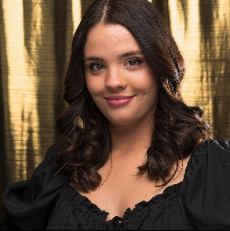
¡Holaa holaaa! Mi nombre es María Gracia Hernández Pérez y pertenezco al maravillo staff de A Telón Abierto.
El teatro es mi día a día, en ATA trabajo como actriz, productora y como profesora. AMO lo que hago con locura y estoy infinitamente agradecida con Dios por permitirme trabajar de lo que siempre quise.
En mi trayectoria artística he participado al rededor de diecisiete puestas en escena. Este año participé en la realización del primer cortometraje de ATA llamado “PROFE” del cual estoy orgullosísima. Y también tuve el privilegio de participar como actriz en un par de cortos muy interesantes.
Este año ha estado lleno de cambios, nuevas experiencias y nuevas personas, por eso recuerdo esta frase sacada de alguna página de teatro:
“El teatro es tan infinitamente fascinante, porque es muy accidental, tanto como la vida misma”
- 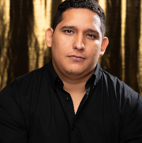
Annyeonghaseyo, mi nombre es Luis Domínguez actor, productor y diseñador de A Telón Abierto. Mis experiencias vividas cada año son una laguna de aprendizaje donde pude nadar para tener un avance bastante significativo en el área actoral, y por eso quiero agradecerle a mi maestro David Torres, a mi compañera productora y pareja sentimental María Gracia y a toda mi familia de ATA que me ayudan a ser mejor y me llenan el corazón de ganas de seguir junto a ellos con este proyecto. Siempre en mi mente estará que “Perdedor no es el que falla si no el que deja de intentarlo” y nosotros nunca dejaremos de intentar mostrarle a todo el mundo qué actuamos por PASIÓN.
Yo soy muy agradecido con la vida, y eso significa darte las gracias a ti, publico, actor, amigo, que ha apoyado este proyecto desde el inicio.
“No actúes para ser famoso, actúa para lo que dices querer ser, actor” Luis Domínguez.
- 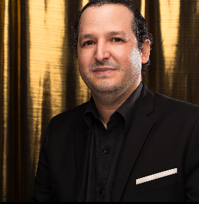
El legítimo arte nos explica y nos convoca a una vida signada por la virtud. Por eso procuro ser un digno obrero de su belleza y verdad. Mi nombre es David Torres y soy profesor universitario (especialista en Lengua y Literatura, entre otras áreas del conocimiento). Asimismo, soy escritor, actor y director de teatro. Desde el inicio de A Telón Abierto, he honrado al arte escénico que nos congrega, educando y dirigiendo nuevas generaciones de artistas que forman o han formado parte de nuestra familia, tanto en la academia como en la compañía teatral. Esto es una causa constante de mi bonanza y felicidad. “Procura la sabiduría” (D. T.).
- 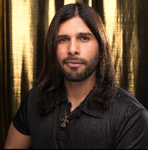
Ser o no Ser, he ahí el dilema.
¿Le es familiar? Les contaré un poco lo que me hace Ser y lo que me hace vivir el arte.
Hablemos de la Pasion.... Es el impulso, fuerza y devoción que se tiene sin explicación, sin razón, sin reparo de un... ¿Por qué?
Y sí, La Pasión me ha conducido desde muy pequeño a esta aventura extraordinaria en las tablas. Han habido retos que superar, cómo la timidez, pero es mayor las ganas de transmitir emociones cuando estoy en frente a un público. Y es ahí cuando se cierra el telón y digo “lo sigo logrando, aquí estoy como lo soñé de niño”
Soy muchas historias presentadas por una misma persona, Soy Gabriel Blanco y esta aventura me ha hecho Ser “un fantasma que ayuda a un viejo amargado, un rompecorazones, un rarito vestido de naranja que hace poemas👨🏻🦰, el villano dispuesto a luchar contra el héroe”.. y muchas historias más que no me va a alcanzar decirlas todas ....tambien, transmito lo que sé como docente para que otros también vivan aventuras al igual que yo.
“El arte/La actuación puede elevar nuestra visión y espíritu para cambiar el mundo”
Gabriel Blanco
- 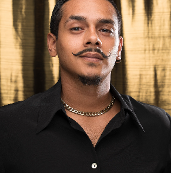
Luces, Cámara, Acción
¡Un gusto saludarte nuevamente!
Soy Luis Barrientos, estudiante de Licenciatura en Teatro, Mención Actuación, con una trayectoria profesional en el campo del teatro, cine y televisión desde hace 10 años, amante de la exploración artística en varios campos del arte, practicante de las artes circenses y conocedor de trabajo del clown e impro. Además del arte me encanta cocinar Fast food, creador de @naranjashopp y recreador turístico
Soy parte del elenco profesional de actores de A Telón Abierto desde hace casi 2 años, en gratitud y agradecimiento con este equipo maravilloso por brindarme la oportunidad y el apoyo de seguir creciendo y formándome.
”En el Arte, yo soy el que Soy”
Luis Barrientos
- 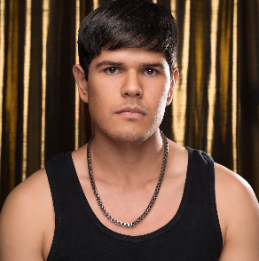
Ningún hombre puede cruzar el mismo río dos veces, porque al cabo de un año no será el mismo río y él no será el mismo hombre. No sé si Heráclito dijo exactamente estas palabras, pero, de ser así, cuánta razón tiene; aplica tanto en nuestro crecimiento personal como en el artístico. Lo que puedes aprender en un año es increíble. Amo A Telón Abierto porque cada año que pasa crecemos y definitivamente no somos los mismos que en los años anteriores. Soy Jesús Medina, me encanta el arte y creo que en todo podemos encontrar arte.
Una frase que no es mía, pero que me recuerdo constantemente, es: “Haz todo lo que puedas con lo que esté a tu alcance”.
- 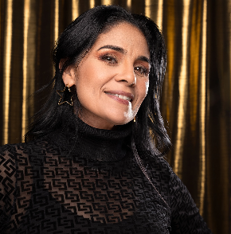
¡Hola! ¿Cómo están?, ¡Es un placer saludarlos! Soy Editza Canelón, madre de tres 24/7, esposa, actríz, teatrera y eterna aprendiz.
Por allá en los años 1.600, me fui a Caracas para estudiar teatro en el Instituto Universitario de Teatro Carlos Giménez (IUDET); lo que hoy se conoce como UNEARTE. En aquel momento viví experiencias maravillosas y tuve el honor de conocer a los mejores directores de Caracas (Javier Vidal, José Gabriel Nuñez, Nicolás Curiel entre otros). 🤓Siendo estudiante y poseida por esas ganas juveniles de estar en un escenario y acompañada por una ambiciosa muchachada!! Decidimos formar un grupo de teatro, así fue como nació “Séptimo piso”, ahí debuté como Actríz con “Credit Bill” versión de los Intereses Creados de Jacinto Benavente bajo la dirección de mi estimado y recordado Dairo Piñeres... Así mismo seguía formándome y aprendiendo cada vez más del quehacer teatral
Sin embargo, Dios tenía para mí otros planes no era que los míos eran buenos ¡No!, pero los de Él eran mejores. Luego de una laaaarga... Pausa teatral, a principios de este año 2024 se me presentó la oportunidad maravillosa de realizar un casting en ATA el cual fui recibida con mucho cariño. Que privilegio y que bendición poder hacer lo que nos gusta, con gente buena vibra, cultivando presente y futuro, cosechando y sonriendo, con la emoción y el asombro del que sigue confiando en que la vida se las arregla para ser una nota.
Estoy súper agradecida y honrada de pertenecer al Staff de A Telón Abierto: Jóvenes incansables que me dejan maravillosas lecciones de vida. ¡El cielo es el límite!
¡La pasión es el camino para amar lo que haces... El espejo lo sabe y no lo esconde del alma!
-Editza Canelón-
- 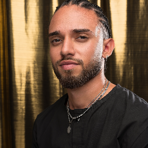
Hola que tal, mi nombre es Jeremy González y soy actor de a telón abierto la actuación para mí es más que una profesión, para mí, es un arte muy compleja y multifacética que engloba tanto la interpretación de personajes mágicos en un escenario como la expresión de emociones y acciones en el mundo real. Es una forma de comunicación tan poderosa que nos permite conectar con el público, compartir historias y explorar la imaginación humana.
Ser parte de a telón abierto me inspira constantemente, a estar buscando nuevas formas de aprender y crecer como actor, algo que siempre me emociona es ver lo que mis compañeros actores pueden crear desde sólo un texto.
La gente en ocasiones me ha preguntado ¿que haces para no tener miedo al estar parado frente a tanta gente? Y es una pregunta que ni yo mismo se.. solo me digo “comete al mundo con tu arte”.
- 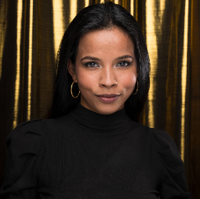
Soy amante empedernida de las artes, los buenos modales, la ortografía y el servicio a los demás. Mi nombre es Yohemí Catarí, y lo que me caracteriza es que nunca dejó de hablar, dicen que parezco podcast andante. Desde pequeña me he desenvuelto en el medio artístico, en la escuela siempre era la de las poesías, las canciones y las obras de teatro.
Soy locutora, de radio y televisión, y aunque mi fuerte es la presentación, poco a poco he ido incursionando en la actuación teatral profesional, amo el teatro con todo mi corazón.
Me gusta siempre estar formandome, ir a clases y hacer cursos de cualquier área, y siempre que tengo tiempo lo invierto en mí conocimiento, aunque sea leyendo o viendo documentales.
Actualmente soy presentadora y miembro de la unidad de medios del Teatro Juares.
Y afortunadamente pertenezco también al equipo de producción de La Gran Familia A Telón Abierto, quienes me han abierto las puertas y no han parado de ayudarme a crecer y amar más mi trabajo.
De mi profesiones, la más linda y difícil y sin duda de la que más he aprendido,es la maternidad, tengo un bebé de 1 añito, quien se ha convertido además de mi hijo en mi maestro, con su corta edad y sin saber me ha enseñado tantas cosas... entre ellas lo corta que es la vida, lo bueno que es Dios y lo afortunados que somos todos los días.
Siempre digo que el arte es una Terapia, no solo para el que lo aprecia, sino también para el que lo hace, es la mejor manera de llenar el alma y salvar vidas. Creo firmemente que con constancia, trabajo, esfuerzo, disciplina y dedicación podemos lograr todo lo que nos propongamos, como dice mi persona favorita, trabajando con el Talento y la Fe, por eso mi lema de vida es: “Las oportunidades siempre llegan, lo importante es que te encuentren trabajando
- 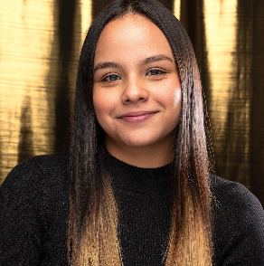
Holaa, Soy Mafer Yepez y estoy a un mes de cumplir 21 años. Estoy en A telón abierto desde cuando solo era un pensamiento de un grupo de amigos que quería hacer teatro y divertirse. Desde entonces me fui formando como actriz y creciendo mucho en esa área, ha sido una experiencia maravillosa.
Soy bailarina desde muy pequeña, me gusta aprender y enseñar, actualmente soy la coreógrafa de A telón abierto.
Amo el mundo audiovisual, hago uno que otro videito que seguramente han visto por allí y totalmente amante de la fotografía.
“Todo es temporal”. Tanto lo bueno como lo no tan bueno. - *sea de quien sea la frase*
- 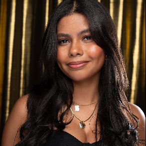
Hola! Mi nombre es Glorianna Carreño tengo 18 años de edad y estar sobre las tablas es lo que más me alegra en la vida!
Hace ya dos años que empecé a hacer lo que se convirtió en mi mayor pasión, actuar, en “A Telón Abierto” dónde he aprendido distintas maneras y técnicas excepcionales para hacer esto que amo.
Adoro el arte de hacer teatro, el expresar y profundizar sobre los sentimientos que atraviesan los personajes y demostrarlo al mundo me parece mágico.
He participado en distintas obras, como lo son; “La Cenicienta al alcance de todos”, “Romeo y Julieta”, “Colores” e hice una participación en la exitosa obra “Canción de Navidad” las 2 veces que fue presentada.
Además del teatro, también amo cantar, dibujar, pintar, bailar y también me gusta mucho el arte de maquillar.
~”El arte es el medio perfecto para expresar lo que el corazón quiere decir, pero la mente te hace callar” ~GloriannaCarreño
- 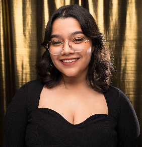
Hola, mi nombre es Daniela González y tengo 20 años.
Mi formación artística inició desde pequeñita. Entré en Arteatro Lara con solo cuatro años, sin saber siquiera leer pero con mucha emoción de estar sobre las tablas. Esta compañía me cobijó durante ocho bellos años, donde aprendí mucho y fortalecí mis lazos con el teatro.
Como mi afinidad con las artes seguía latente, hice cuantos talleres me fueran posibles y formé parte de otras agrupaciones, entre ellas el Teatro Juares y la Fundación del Niño Dejando Huellas. Así mismo, también desarrollé mis habilidades con la danza, el dibujo, las manualidades, la narración oral escénica, el maquillaje teatral y todo lo que tuviera la capacidad de aportarme algo como artista.
Actualmente soy estudiante universitaria de artes escénicas, y formo parte del staff profesional de A Telón Abierto desde hace poco más de un año. Continúo absorbiendo todo el conocimiento posible y poniendo mi corazón en cada parte del proceso.
“Con el arte podemos expresar aquello que de otra forma nunca nos atreveríamos a decir” -Daniela González.
- 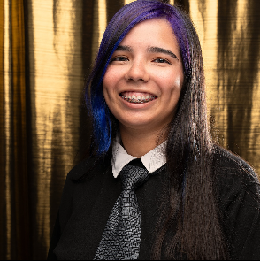
Holaaa, ¿cómo están? Yo soy Kris, el meme con piernas de A telón abierto. Soy la sonidista y escenógrafa de esta maravillosa compañía y me encanta lo que hago.
Desde pequeña siempre supe que quería trabajar en el mundo del entretenimiento y gracias a A telón abierto, he podido cumplir ese sueño. No solo he aprendido muchísimo en mi trabajo, sino que también he encontrado una familia en ATA.
Sé que me conocen por hacer de meme en los vídeos, pero quiero que sepan que hay mucho más detrás de eso. Soy una persona apasionada por lo que hago y siempre doy lo mejor de mí en cada proyecto en el que trabajo.
También formo parte del club de narración oral escénica en nivel cremita de auyama. Soy muy afortunada de poder trabajar en algo que amo y rodearme de personas increíbles todos los días.
Así que eso es un poco sobre mí, Kris, el capibara bipolar de A telón abierto.
“Es mejor fracasar haciendo algo que amas que vivir una vida mediocre haciendo algo que no te apasiona” By: Krinchoncho
- 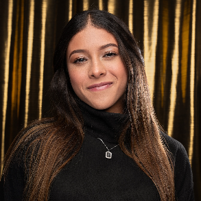
Hola hola.
Soy Mariangel, actriz, entrenadora y estudio nutrición.
(soy la fit del grupo)
Actuar es de las cosas que más amo hacer desde que tengo 8 años. Para mi actuar es explorar y vivir otras vidas, siempre me ha gustado la fantasía y este arte me permite vivirlo, a lo largo de este tiempo las tablas y las cámaras me han dado experiencias que las palabras no alcanzarían a describir.
Me gusta mucho el cine, su simplicidad y naturalidad, pero definitivamente en las tablas está la verdadera magia.
Una vez alguien me dijo: “cuando sientes nervios, ese es el verdadero talento”
Entonces nada como sentir a todo un público en vivo, que se abra el telón, tener los nervios a mil y convertirlos en talento
- 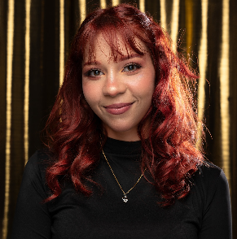
Hi! Soy Fabiana Linares y aunque no lo parezca tengo 22 años.
A lo largo de mis años actuando he llegado a impresionarme pues soy muy tímida, si me ves en la calle de seguro no te voy a hablar pero al subir al escenario no hay quien me pueda callar.
Lo mío es el arte, el baile y el maquillaje.
Todo lo que permita transformarme, expresarme y hacer sentir al expectante.
“Dicen que los colores representan emociones y si sabes lo que digo, te haré ver el mundo en amarillo” -Fabiana Linares
- 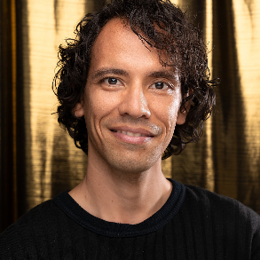
Hola
En este universo llamado realidad me asignaron el nombre de Edward Rincones, significa guardián de cuentos, por esto ser Cuenta Cuentos se convirtió en mi mejor habilidad, actualmente lidero El Club de Narración Oral Escénica dentro de la compañía.
Sin embargo, mi primer y verdadero amor es la actuación, la conocí ya hace unas cuantas lunas y he interpretado a reyes, piloto, mago, policía, un cura en la historia de Venezuela hace 200años y así como la luna es distinta en cada fase, distinto ha sido mi trabajo con los grandes directores que he trabajado y aprendido, como Ricardo Catevilla, José Daniel Suárez Hermoso, Ulrike Sánchez, Graciela Anzola entre otros.
Hace 1 año conocí A TELÓN ABIERTO luego de una trágica y larga pausa para pretender ser un “adulto funcional” aún así, me di cuenta que no se deja de ser adulto por ser un alma artística, sensible y lúdica.
“Para destrabar el garabato del teatro solo hay que hacer teatro.” -Edward Rincones
- 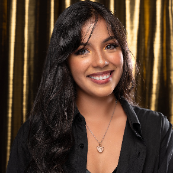
Hola. Me llamo Victoria González tengo 22 años y soy la Vicky y maquilladora oficial de A Telón Abierto desde el 2022.
Actualmente Licenciada en Comunicación Social, egresada de la Universidad Fermín Toro, pero decidí llevar el camino del arte formándome como actriz y maquilladora artística que “no sabe que está haciendo pero luce genial haciéndolo” -Victoria González
- 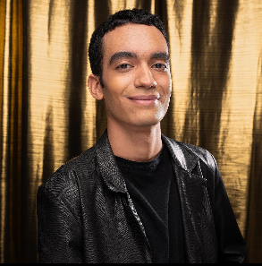
¡Hola! soy Manuel Diaz y tengo 20 años. Mi carrera artística comenzó desde el año 2018 y desde ese entonces no me arrepiento de mi decisión de convertirme en actor.
Tengo experiencia en múltiples obras de teatro en las que puedo destacar “Canción de Navidad” y “Llamada de Auxilio”, adicionalmente recibí formación en modelaje durante aproximadamente 1 año y destaco dos eventos importantes, el desfile de moda Know My Story 2022 (KMS) y el certámen Miss & Mister Supreme Venezuela 2021.
En aspectos técnicos he desempeñado como luminito y sonidista, y como hobbies tengo interés en la seguridad informática y los videojuegos.
“De 100 personas que critican tu arte sólo 1 tiene importancia y esa critica es la tuya” - Manuel Diaz.
- 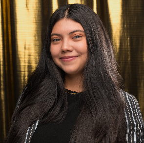
Soy Mafer Baldallo, tengo 20 años , y desde que me monté a las tablas no he parado de hacer lo que amo, en mi experiencia como actriz, me he formado en áreas de producción, cine, circo, guión, oratoria,impro, canto y guitarra, y teatro.
También me encantan las áreas de gerencia, organización y todo lo relacionado con el pensamiento y comportamiento humano , actualmente me encuentro estudiando Ingeniería Industrial y pretendo seguirme especializando.
A Telón Abierto es para mí un hogar y me siento agradecida por la increíble familia que tengo.
“El que nace para el arte, está destinado a convertir toda su vida en una obra”. -María Fernanda Baldallo